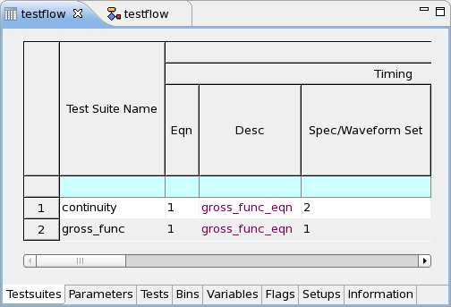

Flow Data Editor
The Flow Data Editor consists of eight pages.

For details on the eight pages see the links below:
Functional changes
- Introduced before SmarTest 6.3.2
- SmarTest 6.5.2: Testtree page is removed.
- SmarTest 6.5.2: Test suites page replaces Testlist page.
- SmarTest 6.5.2: Tests page replaces Limits page.